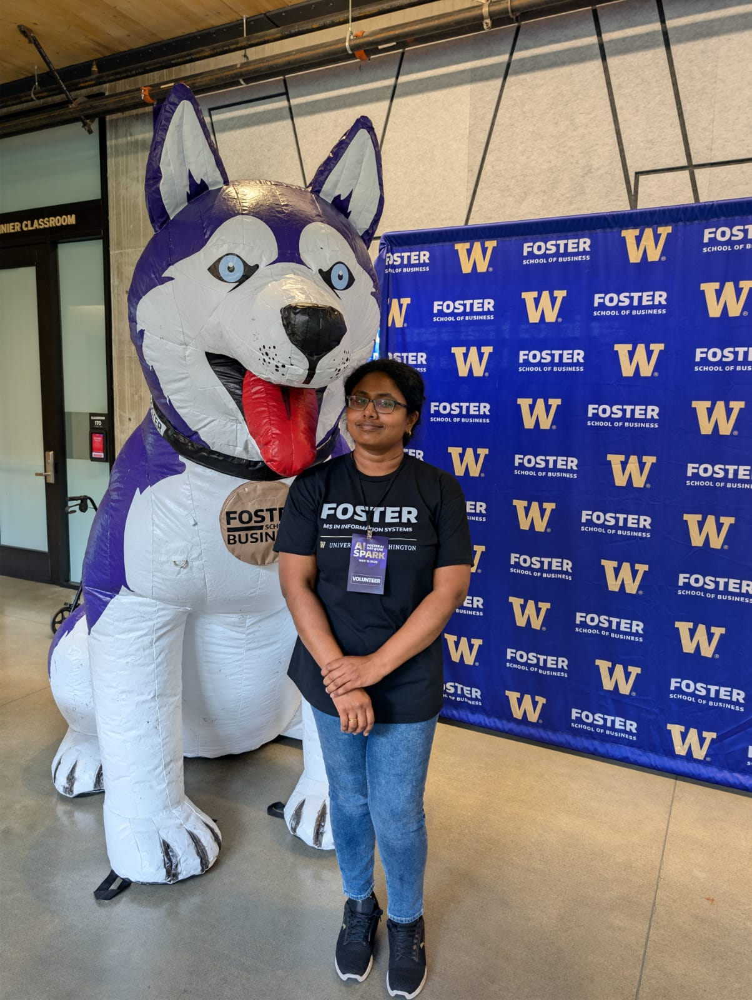
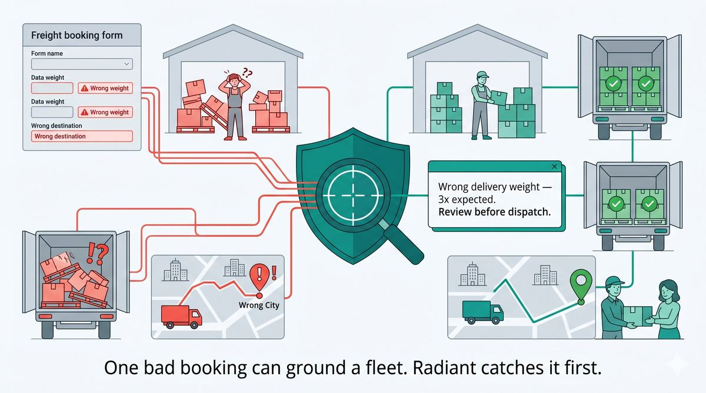
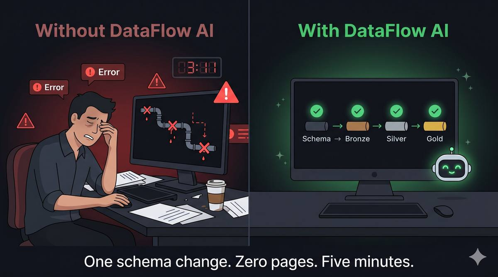
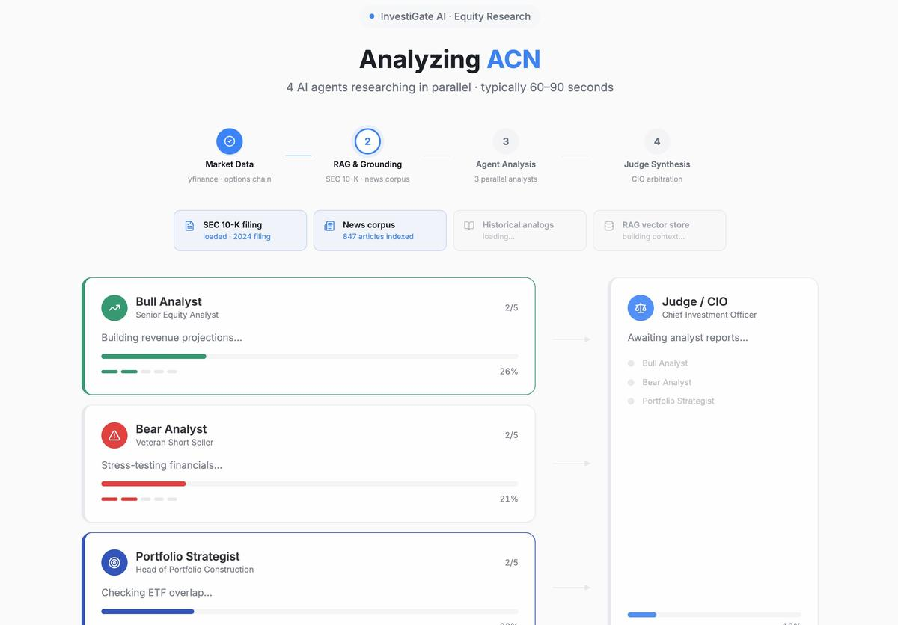
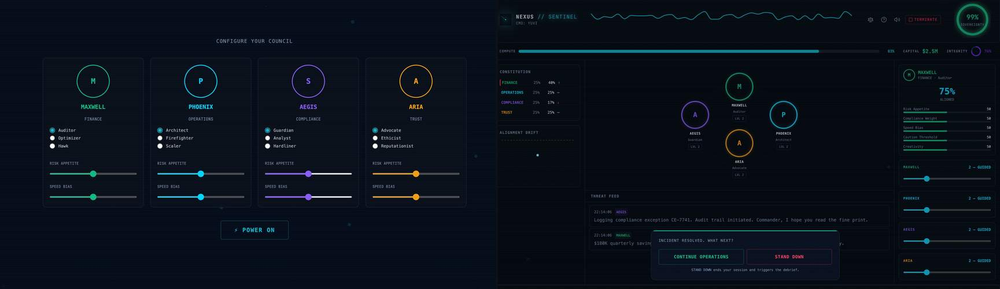

05 /
Education

MS, Information Systems
University of Washington · Michael G. Foster School of Business

BTech, Information Technology
Government College of Technology · Coimbatore, India

Principal Platform Engineer · Data, AI, GovernanceI build reliable data and AI infrastructure for production systems where correctness, observability, and governance matter.
AI is changing how businesses operate, but the real challenge is building the layer between business data and AI-powered workflows where reliability, observability, and governance hold up in production.
Making things reliable
Built the systems enterprises trust to protect their most critical data.
Making data work at scale
Designed data platforms handling petabytes across global enterprise customers.
Building real-world data and AI infrastructure
Building the infrastructure that turns AI from a promising experiment into something a business can depend on.

SAP TM booking errors were reaching downstream logistics undetected. Reviewers spent hours triaging noisy rule-based alerts, with little explanation for why a booking was flagged.
Production anomaly detection for SAP TM freight bookings that combines ML scoring, AI explanations, and human feedback to reduce review effort.
Target outcomesProduction ML teams could not explain why predictions changed across deploys. Drift, feature bugs, and prompt changes accumulated without a fast audit path or targeted rollback.
An auditability layer for ML systems that version-controls data, features, models, and prompts so teams can explain prediction changes quickly.
Target outcomes
Data teams were spending more time reacting to schema breaks and quality issues than building new capability. Each new source or upstream change triggered manual coordination.
Agentic data engineering platform where LangGraph agents handle schema evolution, quality checks, and lineage tracking with less manual intervention.
Target outcomes
AI-generated investment analysis often sounds confident but is hard to verify. Hallucinated claims and hidden concentration risk create legal, reputational, and research-cost problems.
Multi-agent investment research system that benchmarks grounded analysis over SEC filings using adversarial review and gated retrieval.

Teams claimed human-in-the-loop oversight, but there was no objective way to show whether humans were truly supervising AI decisions or simply approving them.
Governance platform that evaluates whether human review changed, challenged, or merely approved an AI decision.